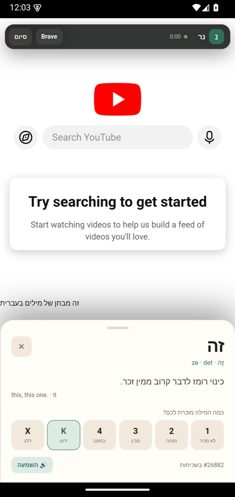

Read more.
Look things up less.
Ner is a reading app for language learners. Tap any word to see what it means, grade how well you know it, and keep reading. The next page already knows what you learned.

What it does
Read anything
Books, pasted text, and web articles in one reader. EPUB chapters and TXT files open directly.
Tap, grade, continue
New words are blue, learning words amber. Grade 1–4, mark known with K, or ignore with X.
Watch & listen
YouTube runs inside the app with a caption mirror: visible captions become clickable words.
25 dictionaries
Hebrew, English, Arabic, Spanish, French, German, Italian, Portuguese, Dutch, Swedish, Danish, Norwegian, Finnish, Polish, Russian, Ukrainian, Greek, Turkish, Chinese, Cantonese, Japanese, Korean, Vietnamese, Indonesian, Thai.
Your data stays local
Words, settings, and statistics are a local JSON file. Export a backup whenever you want.
Dark, properly
The page, word sheet, status bar, and navigation bar all switch together.
Screens
 Books / Web, with a real shelf
Books / Web, with a real shelf
Captions become vocabulary Offline lookup, 25 packs
Offline lookup, 25 packs Page colour, font, paging, read aloud
Page colour, font, paging, read aloud Words grouped by the day you met them
Words grouped by the day you met themInstall
Download the APK on your Android phone.
Open it from the notification or Files. Android will ask permission to install from this browser — allow it once.
Read. No account, no sign-in. Your words stay on the phone.
android 8+c24e1dce84c5b7503dd50ffc3ff430426b71be2563b628ad12cb300822bce960An honest line
Not Sluka
Ner is an original, clean-room app inspired by the same reading workflow. It contains no Sluka code, assets, branding, or dictionaries.
Not finished
Missing: PDF/OCR, sync, Anki, cloud voices, and full morphology for some languages. Non-Hebrew dictionaries currently gloss into English, not Hebrew.